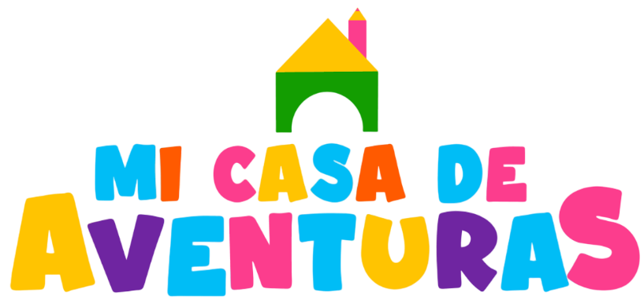

MatrículasJardín infantil y sala cuna en La Florida, que educa con amor y valores a los más pequeños.
Agenda una visitaVer nivelesLos bebés son pequeños exploradores en un safari de sorpresas. Una sala para despertar su curiosidad por los animales, las plantas y los colores, y desarrollar el gateo, el equilibrio y la coordinación.
Los niños exploran su entorno cercano, aprendiendo sobre el agua, las plantas y el clima, mientras desarrollan habilidades para valerse por sí mismos.
Pequeños creativos que investigan cómo funciona el mundo: estaciones, arte y música, movimiento y pesos, con el “porqué de las cosas”.
Un jardín infantil y sala cuna cuyo enfoque está en educar con amor y valores a nuestros pequeños, promoviendo el conocimiento por medio del descubrimiento, la creatividad y la autonomía en sus distintas etapas de la vida.
Los invitamos a conocernos y ser parte de nuestra comunidad.
Santa Julia 3438, La Florida
Lunes a viernes, 08:00 a 18:00